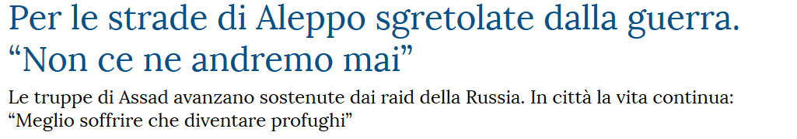
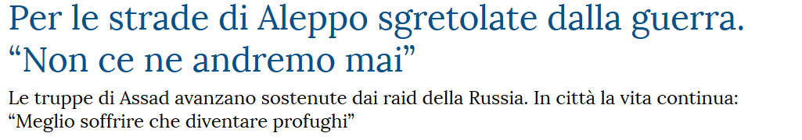
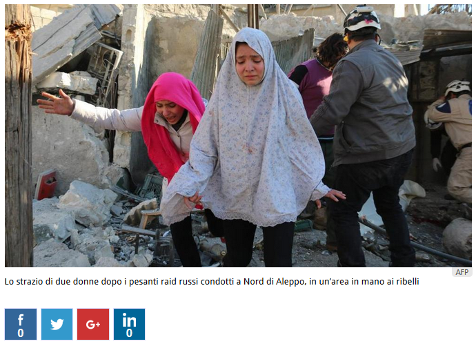
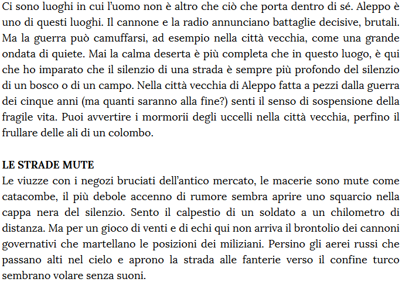
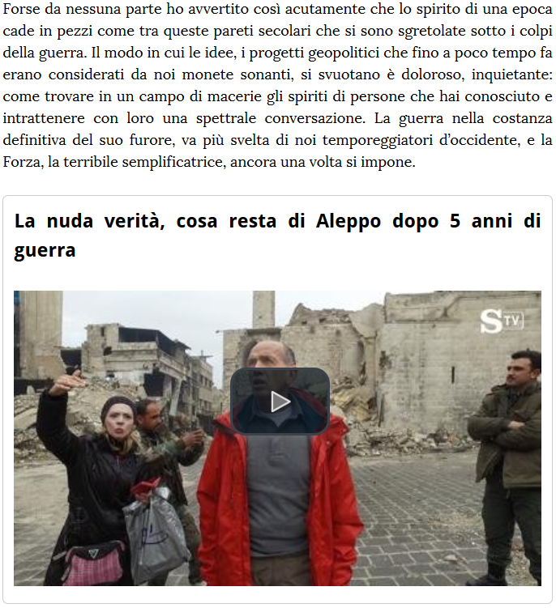
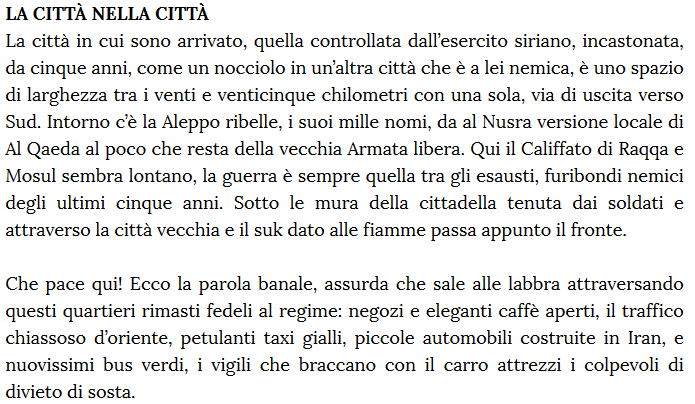
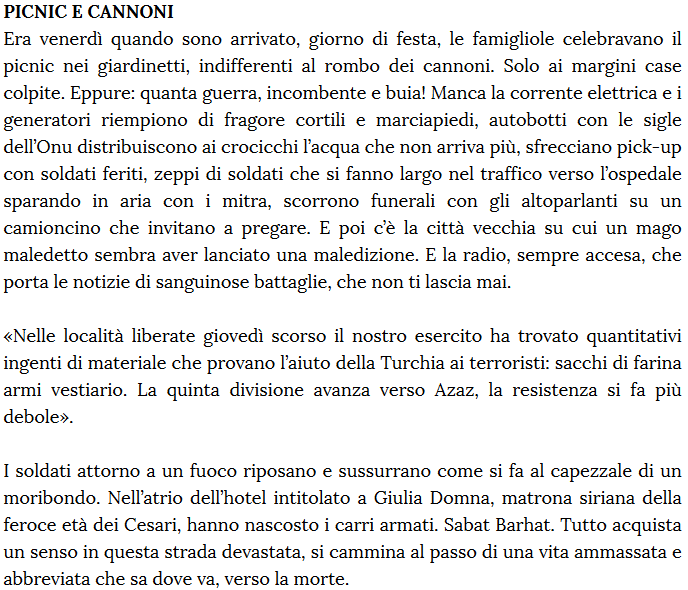

09/03/2016




Fonti:
Siria: Sant’Egidio rinnova appello, “aiutare Aleppo a non morire” (onuitalia.com)
Battaglia di Aleppo (wikipedia.org)
La vita dei siriani cinque anni dopo l’inizio della guerra (internazionale.it)
Syria War - Insane Heavy Intense Urban Firefight Aleppo Syria (youtube.com)
Siria: Sant’Egidio rinnova appello, “aiutare Aleppo a non morire” (onuitalia.com)
Battaglia di Aleppo (wikipedia.org)
La vita dei siriani cinque anni dopo l’inizio della guerra (internazionale.it)
Syria War - Insane Heavy Intense Urban Firefight Aleppo Syria (youtube.com)
Creato il: 20/03/2016 1:05
Pubblicato il: 21/03/2016 21:40
Ultimo aggiornamento: 22/03/2016 11:45
Versione: 3.7
Pubblicato il: 21/03/2016 21:40
Ultimo aggiornamento: 22/03/2016 11:45
Versione: 3.7
Copyright: La Stampa
Editor: Guido Tiberga
Rivisto da: Michele Brambilla
Hanno collaborato: Alberto Infelise, Francesco Manacorda, Gianni Martini
Rivisto da: Michele Brambilla
Hanno collaborato: Alberto Infelise, Francesco Manacorda, Gianni Martini
Editore: ITEDI s.p.a.